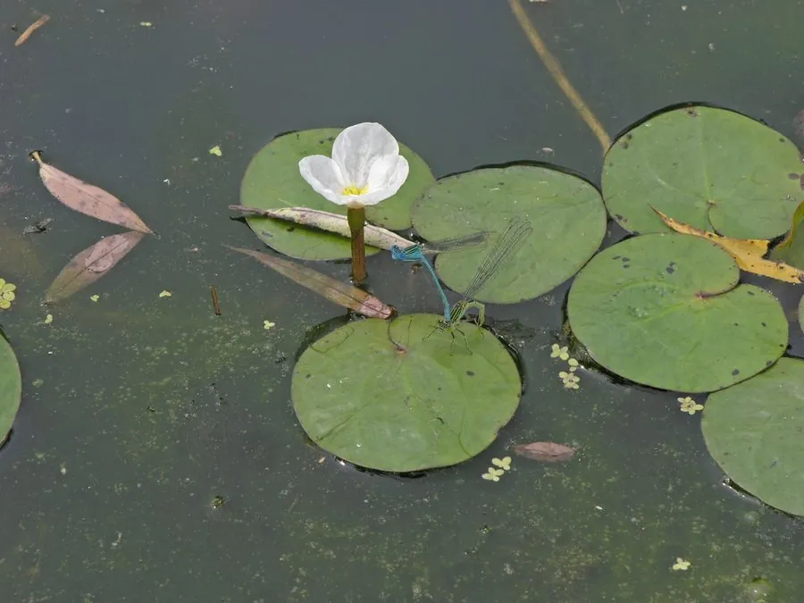

水生植物 · 植物界
水鳖 Hydrocharis dubia

水鳖科多年生漂浮草本，圆形叶片背面有浮囊，夏秋开白色小花，生于池塘水田，是常见的水生观赏植物，也可净化水质。
- 分类
- 门被子植物门纲木兰纲目泽泻目科水鳖科属水鳖属
- 栖息环境
- 池塘、水田、沟渠等静水水面，喜温暖、富营养
- 地理分布
- 广布亚洲与澳大利亚，中国各地淡水水域常见
- 保护级别
- 暂无评估
物种志
水鳖为水鳖科水鳖属多年生漂浮草本，茎短，具匍匐枝。叶片圆形或心形，浮于水面，直径 2–5 厘米，叶面绿色，叶背有凸起的海绵状浮囊，呈紫红色。花单性，雌雄异株，白色，花瓣 3 枚，花期 7–9 月；果实为肉质浆果。
水鳖广布于亚洲和澳大利亚的淡水水域，中国各地池塘、水田和沟渠常见，喜温暖、阳光充足和富营养的静水环境，靠匍匐枝和越冬芽繁殖。它叶背的浮囊能储存空气，使叶片浮在水面；根系悬于水中吸收养分，可吸收氮磷、净化水质。水鳖叶形圆润、花白色小巧，可作水景布置和鱼缸植物，秋冬形成休眠芽沉入水底越冬，翌年气温回升后再萌发。
形态与习性
- 株高叶片直径 2–5 厘米，漂浮生长
- 花期7–9 月，花白色，3 瓣
- 果期花后结肉质浆果
- 光照喜充足阳光
- 水分漂浮于静水或缓流水面
- 土壤不依赖土壤，根系悬于水中
- 繁殖匍匐枝与越冬芽繁殖
- 主要用途水景布置、鱼缸植物、净化水质
趣味知识
- 水鳖叶片背面有海绵状的浮囊，能储存空气使叶片浮在水面。
- 它雌雄异株，花白色、只有 3 枚花瓣，花期在夏秋。
- 水鳖的根系悬在水中，可直接吸收水里的氮磷，有净化水质的作用。
- 秋冬季节水鳖会形成休眠芽沉入水底，来年再浮上水面生长。